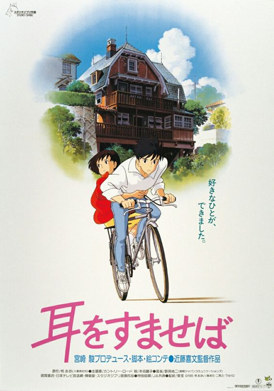

HOME

Whisper of the Heart(1995)
《侧耳倾听》是由吉卜力工作室制作、近藤喜文执导、宫崎骏担任剧本。改编柊葵创作的少女漫画，在1995年7月15日推出的日本电影动画。《侧耳倾听》讲述喜爱阅读的少女与喜爱小提琴的少年邂逅后相恋，他们彼此订下了人生目标并期许未来能互相支持着对方追逐梦想。
作品的场景是以东京都多摩的圣迹樱丘一带为范本并与插画家井上直久合作。以数码合成作画的方式将井上直久创作的奇幻风格插图导入在影片中。《侧耳倾听》也是日本电影动画中，第一个引入杜比数字立体音效技术的作品。
在剧院上映时，与吉卜力以日本歌星团体恰克与飞鸟的单曲《On Your Mark》所改编的同名短篇动画同时播放。公开后得到大众回响，在剧中角色猫男爵与胖猫阿月在吉卜力工作室的2002年电影动画《猫的报恩》中，再度被采用。